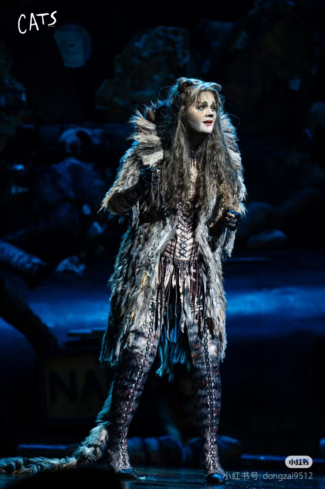
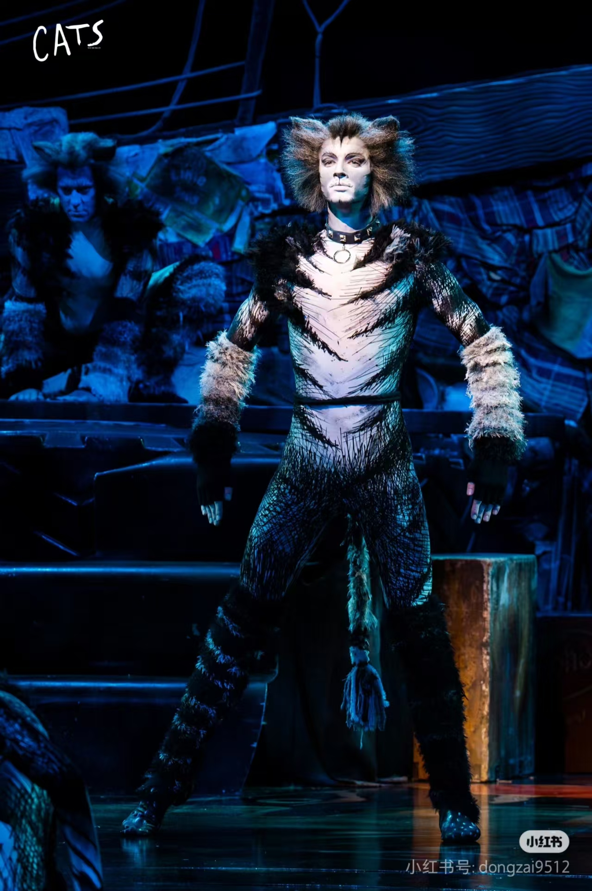
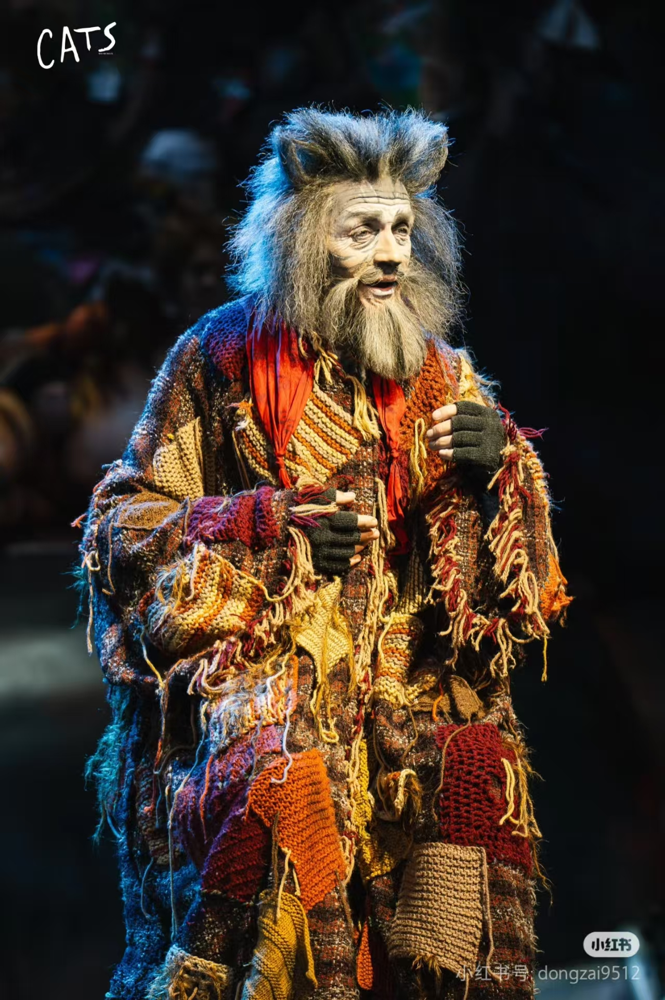

剧目简介
《猫》是安德鲁·劳埃德·韦伯改编的经典音乐剧，以“杰里科猫族选领者大会”为线索，通过不同猫的歌舞展现生命哲学，《Memory》唱段广为流传。
核心角色解析
| 角色图片 < | 角色名称 < | 性格特点 < | 经典唱段 |
|---|---|---|---|
 |
魅力猫（Grizabella） | 晚年落魄，渴望被猫族接纳的“悲情美人” | 《Memory》 |
 |
摇滚猫（Rum Tum Tugger） | 叛逆张扬、魅力十足的猫界“偶像” | 《The Rum Tum Tugger》 |
 |
领袖猫（Old Deuteronomy） | 智慧威严、公正善良的猫族长者 | 《Old Deuteronomy》 |
演员核心素养
《猫》的演员需具备“唱跳演三位一体”能力：
1. 肢体塑造：模仿猫的步态、扑跃等细节，形成肌肉记忆；
2. 声乐切换：灵活驾驭抒情、摇滚等不同风格唱段；
3. 角色共情：如饰演魅力猫需传递出孤独与尊严的矛盾感。